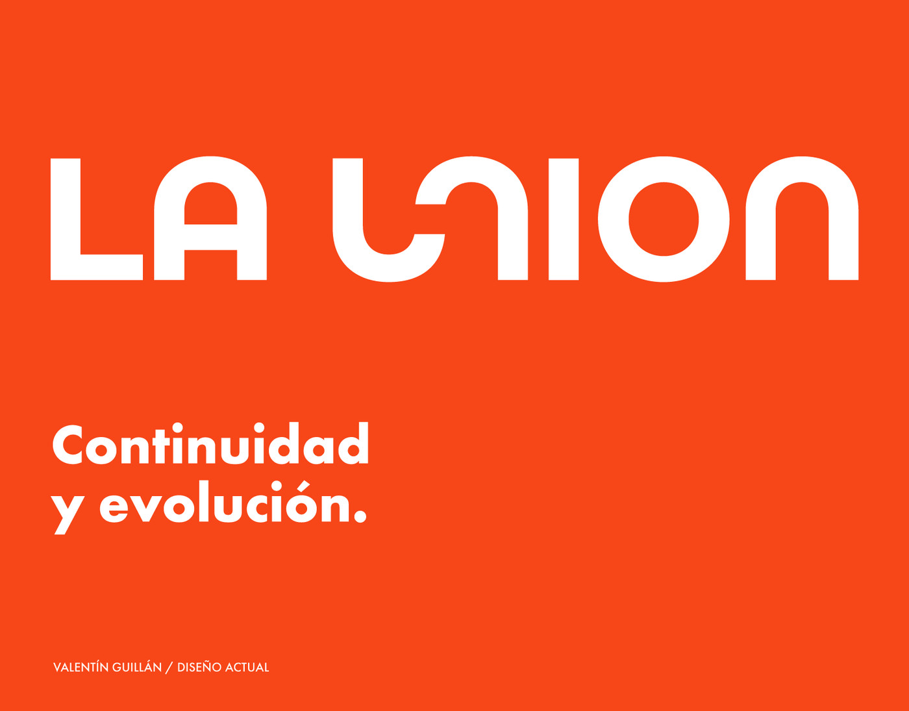

Ver proyecto01
Identidad · Packaging · Comunicación · Editorial
Panadería & Confitería La Unión
Continuidad, modernización y desarrollo del sistema gráfico, editorial y de comunicación. Diseño actual: Valentín Guillán, diseñador de La Unión.
Ver el caso completo